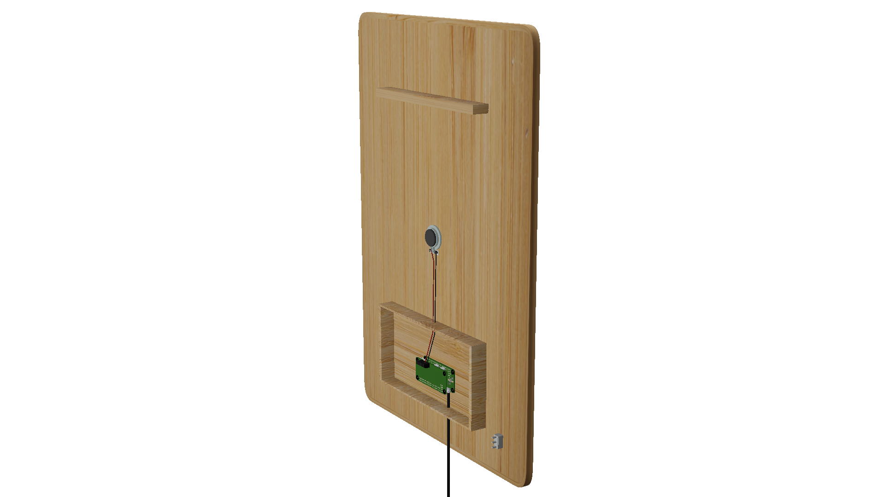
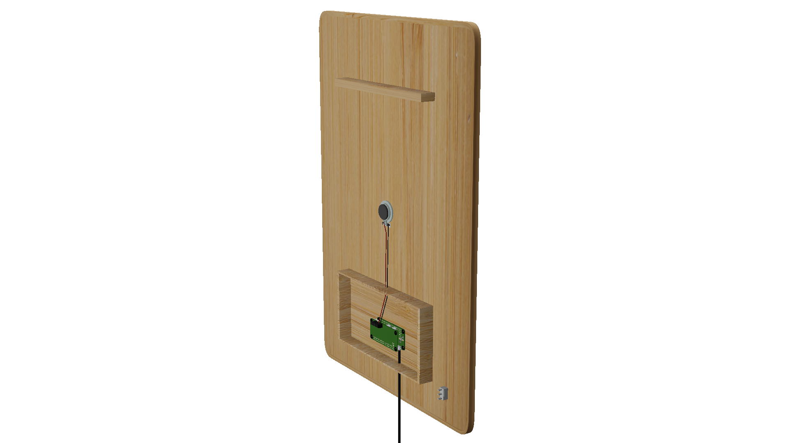

a generative sonic atmosphere contained in a wooden frame. turn it on, let it run and fill the room for as long as needed.
images
 

-
random delayedeach sample plays back one after the other, picked randomly. a break of random duration is inserted after each sample.
sounds
the soundscape loaded on the frame are played back dynamically. here are examples for the different modes of composition.